Everything the engine could draw before this category either fitted a regular polygon or did not fit anything. A vector shape is different: it is resolution independent by construction, editable after the fact, and the only source in the catalogue whose outline is something you can measure (a distance, a length, a tangent) instead of a picture you have to guess at from pixels. Sixteen nodes cover the whole loop, drawing a shape, filling and stroking it, transforming and combining it algebraically, measuring distance off it, and tracing pixels back into contours again.
Most of these nodes never rasterize anything on their own, a Transform composes a matrix, a Combine writes down an operator, and the tree stays exact until something downstream (a Fill, a Stroke, an Export) actually needs pixels or an SVG. That is why stacking several of them costs nothing extra: nothing gets flattened until the very end.
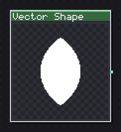
Stores a hand-drawn shape and opens it in its window with pen, pencil, shapes and knife.
The one node in the category with nothing to configure beyond a Draw... button, which opens the shape in its own window with pen, pencil, primitive and knife tools. What you draw is the entire node, and a fresh one starts as a simple pointed leaf (two corner anchors joined by two curves), deliberately something no primitive in this family could produce on its own, so it reads as hand-drawn from the first frame.
Use it for a silhouette you cannot get out of Vector Primitive or the Nature category: a custom leaf for Foliate, a badge shape, a hand-fit outline traced over a reference. Everything downstream (Fill, Stroke, Offset, Repeat, Export SVG) treats it exactly like any other shape, so a Vector Shape slots into a Foliate's Leaf input or a Flower's Petal input with no extra wiring.
In: nothing · Out: shape
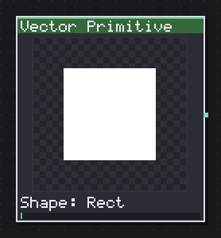
Puts a vector shape on the wire: rectangle, ellipse, polygon, star, arc, line or spiral.
Eight parametric shapes (Rect, Rounded Rect, Ellipse, Polygon, Star, Arc/Pie, Line, Spiral) behind one Shape combo, which is the node to reach for whenever the silhouette itself is regular. Sides only matters for Polygon and Star, Inner % for Star and Spiral (how far the inner points or the spiral's start pulls toward the center), and Start angle plus Sweep for Arc/Pie and Spiral, a Sweep past 360 on a Spiral is what actually makes it wind more than once.
Size X % and Size Y % are independent, so a Rect stretched wide and an Ellipse squashed flat both come out of the same two sliders; Line only has Size X % since a line has no height of its own to give.
This is usually the first node in a chain: fill it directly, stroke it, or feed it into Combine, Repeat or Offset before it ever becomes pixels. No inputs, so it is always a starting point.
In: nothing · Out: shape
Parameters
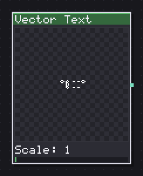
Turns text in the 5x7 font into contours, keeping the pixel or fitting it to curves.
Text rendered in the engine's 5x7 font, but as contours instead of a picture. Blocky is on by default, which keeps the pixel: the contour runs along real pixel boundaries, so filling it Aliased gives back exactly what the plain Text node would draw. Turn Blocky off and Simplify px and Fit: Curves (with Fit error px) appear, which smooth the letterforms into a proper font-like curve instead of a staircase, at the cost of no longer matching the pixel Text node exactly.
Scale is the one row worth watching on a small card: at 64 px, four letters of "TEXT" hold up to about scale 4 before the word runs off the edge, so most of a slider's reach past that point is a picture of one letter. Anchor (Fit, Left, Center, Right) decides how the string sits against Pos X/Pos Y once it no longer fits centered.
Because the output is contours and not a picture, the same word can be stroked, trimmed by arc length, dashed or exported to SVG, none of which a rendered bitmap of letters can do.
In: nothing · Out: shape
Parameters
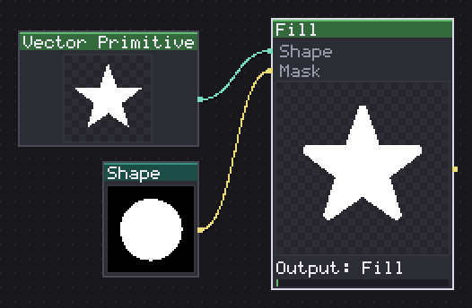
Fills the shape by measuring each pixel area, with a hard, smoothed or dithered edge.
Turns a shape into pixels by measuring how much of each pixel's area the shape actually covers, then deciding ink from that coverage in one of three ways: Aliased (a hard yes or no), Antialiased (soft edges) or Dither (an ordered screen, picked with Screen once Edge is set to Dither). Rule (Nonzero / Even-odd) only shows a difference once two contours overlap or a shape has a self-intersection, over a plain convex outline the two rules agree.
Output is the row that changes what this node hands you: Fill is the plain colored result, Coverage is the raw grey before any edge decision was made, and Distance, Gradient and Normal all read the signed distance field instead, giving a bevel ramp, an inward glow ramp, or a surface normal usable for fake lighting, all without a blur node anywhere in the chain. Colour and Opacity only apply in Fill mode, since the other four outputs are measured values rather than a color choice.
Wire a Mask in and it stencils the result, this is not a blend, a masked-out pixel gets no ink at all rather than a faded one.
In: Shape (shape), Mask (image) · Out: image
Parameters
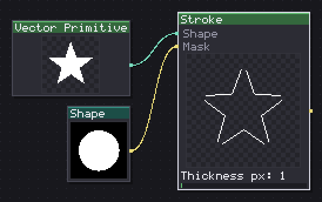
Strokes the shape by expanding it to a fill: width, caps, joins, dashes and pixel perfect.
Expands a shape's outline into a band and paints it, with the same vocabulary a vector editor uses: Align (Center, Inside, Outside), Cap (Butt, Square, Round), Join (Miter, Round, Bevel, with Miter limit only mattering for Miter joins), plus Dashed with Dash px, Gap px and Dash offset px once it is switched on. Taper % thins the stroke toward its ends, which reads as a hand-drawn mark rather than a ruled line at higher values.
Pixel perfect matters specifically at Thickness px 1 with an Aliased edge, it is what keeps a one-pixel stroke from dropping to half a pixel at a shallow diagonal, the case a paint program's own pencil tool has to solve the same way. Leave it on unless you have a specific reason to turn it off.
Same Edge and Screen rows as Fill, for a dithered rather than a hard-edged stroke, and the same optional Mask input to stencil it.
In: Shape (shape), Mask (image) · Out: image
Parameters
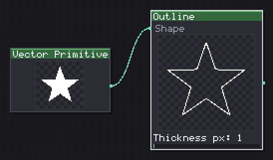
Turns the stroke into a shape, to fill it, combine it or subtract it as one more contour.
The same expansion Stroke draws, handed back as a shape instead of painted, which is Illustrator's "outline stroke": the moment a line stops being a property of a shape and becomes a shape of its own. That makes it fillable, combinable with Combine, offset, repeated or exported to SVG, none of which a painted Stroke can do afterward.
All the geometry rows (Thickness px, Align, Cap, Join, Miter limit, Taper %, the three dash rows) are the identical parameters Stroke uses, on purpose, so a test that fills an Outline and compares it against a Stroke of the same settings is holding a real promise rather than hoping the two look close. Reach for this over Stroke whenever the stroke needs to be combined with something else before it is filled, an outline plus a badge silhouette unioned together, for instance, rather than drawn as a separate pass on top.
In: Shape (shape) · Out: shape
Parameters
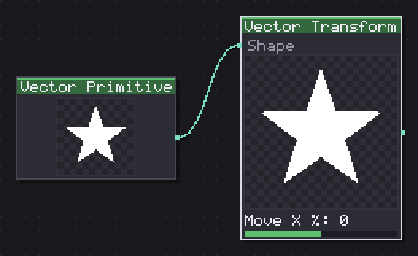
Moves, rotates, scales, shears and mirrors the shape by composing a matrix, anchors untouched.
Moves, rotates, scales, shears and mirrors a shape by composing one matrix: Move X/Y %, Rotate, Scale X/Y % (0-400, so it also shrinks), Skew X/Y, plus Mirror X and Mirror Y, all measured from Pivot X/Y %. Nothing here touches a single anchor, the shape underneath is shared and only a transform is hung over it, so stacking several Vector Transforms in a row costs nothing extra and stays exact at any output size.
Use it the way a Transform layer works in any vector tool: to place a Vector Primitive or a traced shape without baking the change into its points, so a later Offset or Round Corners still measures the original geometry rather than an already-distorted copy. Scaling non-uniformly before a Round Corners will read as an ellipse-shaped fillet rather than a circular one, worth knowing if perfectly round corners matter.
In: Shape (shape) · Out: shape
Parameters
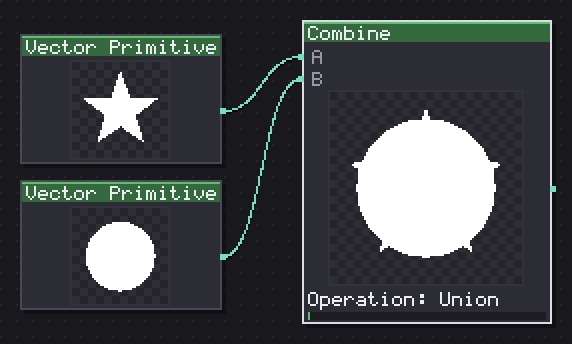
Joins, subtracts, cuts or crosses two shapes by combining coverage, clipping no polygon.
Writes down a boolean operator between two shapes, Union, Subtract, Intersect or Xor, without ever looking at a single anchor until something downstream forces it to. Detail px is the resolution that eventual materialization happens at, since the operator itself has no contours until a Fill, a Trace-adjacent export or another node that has to measure arc length lands it. Raise it if a combined shape looks faceted at a large canvas size, lower it if performance matters more than precision on a small one.
A and B both take any shape, including another Combine, so a tree of unions and subtracts (a badge shape minus a hole, unioned with a ring) stays one operator tree all the way down and gets rasterized once, at the very end, rather than shape by shape. This is the node that makes stacking Vector nodes cheap instead of expensive.
In: A (shape), B (shape) · Out: shape
Parameters
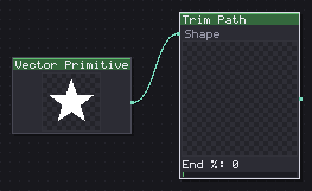
Trims the shape by arc length: start, end and offset, whole or contour by contour.
Cuts a shape by arc length rather than by anchor count, Start % and End % picking the span that survives, Offset % sliding both ends together around the contour. Mode (Whole / Per contour) decides whether a multi-contour shape is trimmed as one continuous run or contour by contour, which matters the moment a shape has more than one loop, a Whole trim can eat an entire secondary contour before it ever starts on the first one.
This is the one node in the algebra family that actually measures instead of just writing down a matrix or an operator, since "half the arc" is not something a matrix can express. It still measures in curve space and splits the underlying cubics rather than a flattened polyline, so what comes out stays resolution independent. Reach for it over stroking a Trace directly whenever only part of an outline should draw, a loading bar traced along a shape, a partial dashed ring.
In: Shape (shape) · Out: shape
Parameters
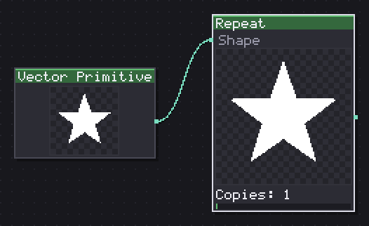
Repeats the shape in a line, a grid or a ring, with position, rotation and size steps.
Stamps N copies of a shape under one union, in a Linear line, a Grid, or a Radial ring, set by Mode. Step X/Y %, Step rotate and Step scale % apply once per copy, so a repeat with a Step scale % under 100 shrinks with every copy rather than staying uniform, useful for a decaying trail of shapes rather than a plain repeated pattern. Pivot X/Y % sets the center Radial mode turns around and Step rotate spins about.
Because it writes N matrices under a union rather than baking N copies of the geometry, changing Copies afterward costs nothing extra to recompute exactly. Watch the step values against the shape's own size, a shape that fills most of the canvas needs a shrinking Step scale % or the copies will sit on top of each other rather than reading as a repeated count.
In: Shape (shape) · Out: shape
Parameters
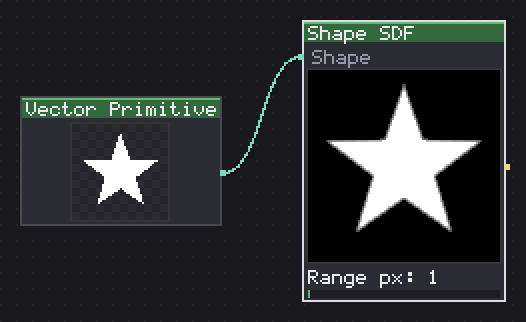
Measures signed distance to the contour and paints it gray, for bevel, glow and halo without blur.
Measures the signed distance from every pixel to a shape's contour and writes it out as grey, mid grey exactly on the outline, lighter inside, darker outside (or the reverse with Signed off, which folds both sides into one unsigned ramp). This is the one place in the category that reads as an actual measurement rather than a picture, and it is what a bevel, a glow or a halo want without a blur node anywhere in the chain.
Range px sets how far the ramp reaches before it saturates, and gets hidden once Normalize is on, since normalize measures the field's own widest value instead of asking for one, useful when the shape's scale varies and a fixed range would clip or barely show anything. Rule only changes the field where contours overlap or self-intersect, same as it does on Fill.
In: Shape (shape) · Out: image
Parameters
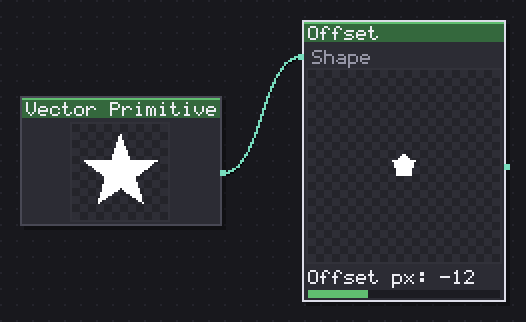
Grows or shrinks the shape: growing by exact expansion, shrinking by the distance field.
Grows or shrinks a shape by a fixed number of pixels, Offset px negative for shrinking, positive for growing, crossing zero in the default demo range because the two directions are built differently under the hood: growing (Mode: Shape) is an exact stroke expansion with real Join control (Round is the default because that agrees with how "offset by n pixels" reads everywhere else in a paint program, Miter exists for a star whose points need to stay pointed), while Mode: Coverage reads the distance field instead and has no joins to speak of.
At small offsets the two modes look close on a rounded shape and differ more on anything with sharp corners. Use this ahead of a Fill to pad a silhouette out for a border, or negative to inset a badge before stroking a thin rim inside it.
In: Shape (shape) · Out: shape
Parameters
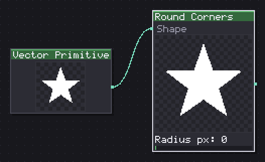
Rounds the shape corners with a radius in pixels, equal for all or scaled per anchor.
Rounds every corner of a shape by a radius in pixels, Global applying the same Radius px everywhere or Per anchor letting the radius scale down at corners too tight to take the full amount. Min angle sets how sharp a corner has to be before it gets rounded at all, a nearly-straight vertex under that angle is left alone rather than turned into a barely visible fillet.
It reads best on shapes with real corners, a Star's five points are the clearest demonstration, since the corners of a star stop changing well before the radius slider runs out its full reach. Past a certain radius on a small shape the rounding will eat into the shape's own silhouette rather than just softening the corner, worth checking against the shape's own size before pushing the radius high.
In: Shape (shape) · Out: shape
Parameters
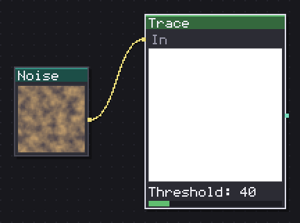
Turns pixels into contours at a threshold, with exact corners or curve fitting.
Turns pixels into contours at a Threshold, reading either the Alpha channel or Luma (Luma is the one to pick on an opaque photograph-like source, since Alpha alone would just trace the whole canvas as one square). Blocky is on by default, which keeps the trace exact, refilling the result Aliased gives back the same pixels that went in, the promise a pixel-art tool has to make about its own tracer. Turn it off and Simplify px and Fit: Curves (with Fit error px) appear for a smoothed vector result instead.
Min island px drops islands below that pixel count, useful for cleaning a noisy trace before it feeds a Combine or an Offset. Holes keeps or drops interior counters (the hole in an "O", a doughnut shape), turn it off if a shape traced from a ring should come back solid.
In: In (image) · Out: shape
Parameters
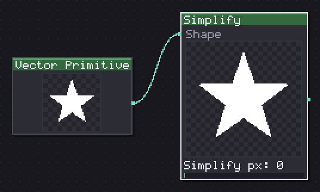
Drops redundant points from the shape, fits curves on request and snaps anchors to the grid.
Drops anchors a shape does not need, Simplify px the tolerance a point can move before it is considered redundant, Fit: Curves (with Fit error px) turning the remaining polyline into proper cubic curves instead of straight segments between the kept points. Snap (Off / Pixel / Half pixel) rounds anchors onto the grid afterward, which is worth turning on before an Export SVG of something meant to read as crisp pixel art rather than as slightly-off-grid vector art.
Detail px is the resolution a lazy shape gets landed at before this node can measure it, the same row Combine, Wind and Trim all carry for the same reason. At small values (under 5 or so) a well-simplified shape looks unchanged, since that is exactly what a clean trace or a Vector Primitive should look like already, the effect shows on a noisy or over-sampled contour.
In: Shape (shape) · Out: shape
Parameters
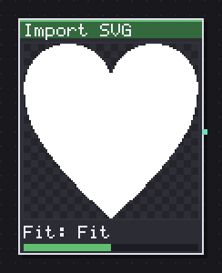
Reads a pasted or loaded SVG: paths, basic shapes and their transform, and counts what it skips.
Reads an SVG document, either pasted as Source: Text or loaded from Source: File, parsing paths and basic shapes (rects, circles, ellipses, lines, polygons) along with their own transforms. Fit (Stretch, Fit, Native) decides how the imported drawing lands inside the shape's own 0..1 square: Stretch fills it ignoring proportions, Fit keeps them and letterboxes, Native keeps the original units untouched. Flip Y matters because SVG's Y axis points down while this engine's shapes do not assume either direction.
This is the door from the rest of the world into the category, a drawing made in Inkscape or Figma lands on the same shape wire a Vector Primitive does, so Fill, Stroke, Combine and everything else work on it unchanged. Whatever the parser could not read (a gradient, a filter, text-as-text rather than as outlines) is silently skipped rather than failing the whole import, worth checking a complex import's result against the source if something looks missing.
In: nothing · Out: shape
Parameters